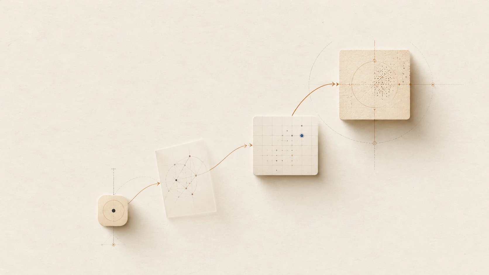

阅读
先扫一眼指南抓住想法，再存下来以后看。
每一篇指南的结构都让第一段承载主要论点。就算停在那里，你也还有东西可想。更深的部分为第二次阅读补充例子和推导。
给想要把难懂科目变清晰的人，一份实用的学习资源——一次一个有用的好问题。

我们为学习通常会慢下来的地方做指南：开头、解释、记忆，以及重新拾起一个主题。
每一篇都设计为配合你自己的笔记、问题和不断变化的角度一起使用。
如何使用 Studio
阅读
每一篇指南的结构都让第一段承载主要论点。就算停在那里，你也还有东西可想。更深的部分为第二次阅读补充例子和推导。
练习
打开指南，复制最小的未完成想法，让 Socrates 陪你走一遍。指南变成跳板，而不是终点。
分享
许多读者保留一篇以指南命名的持续笔记，并在每次会话后写一段简短的反思。一个月下来，这篇笔记就成了你理解如何变化的记录。